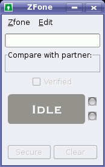

Zfone
Archivierte Anleitung
Dieser Artikel wurde archiviert, da er - oder Teile daraus - nur noch unter einer älteren Ubuntu-Version nutzbar ist. Diese Anleitung wird vom Wiki-Team weder auf Richtigkeit überprüft noch anderweitig gepflegt. Zusätzlich wurde der Artikel für weitere Änderungen gesperrt.
Zum Verständnis dieses Artikels sind folgende Seiten hilfreich:
Zfone  ist ein Programm, das das Verschlüsseln von VoIP-Gesprächen und -Videokonferenzen ermöglicht. Dazu kann jede VoIP-Software (z.B. Ekiga) verwendet werden, da Zfone lediglich eine Verschlüsselungsschnittstelle darstellt und einfach alle Gespräche verschlüsselt, die über den eingestellten Port laufen.
ist ein Programm, das das Verschlüsseln von VoIP-Gesprächen und -Videokonferenzen ermöglicht. Dazu kann jede VoIP-Software (z.B. Ekiga) verwendet werden, da Zfone lediglich eine Verschlüsselungsschnittstelle darstellt und einfach alle Gespräche verschlüsselt, die über den eingestellten Port laufen.
Die Verschlüsselung funktioniert generell nur, wenn beide Gesprächsteilnehmer Zfone installiert und gestartet haben.
Hinweis:
Downloadserver seit Janur 2011 nicht mehr erreichbar
Installation¶
Folgende Pakete müssen installiert [1] werden:
libgtk2.0-dev
libglib2.0-dev
iptables-dev
build-essential
 mit apturl
mit apturl
Paketliste zum Kopieren:
sudo apt-get install libgtk2.0-dev libglib2.0-dev iptables-dev build-essential
sudo aptitude install libgtk2.0-dev libglib2.0-dev iptables-dev build-essential
Für Zfone gibt es momentan noch keine Paketquellen, da es selbst nicht als Freie Software veröffentlicht wird und per Lizenz die Weitergabe im Binärformat nicht gestattet ist. Um einen Zfone Downloadlink zu erhalten muss man sich hier mit seiner E-Mail-Adresse kostenlos registrieren. Im Formular muss man bei Platform "Linux" auswählen.
Nach dem Download muss das Archiv entpackt werden [3]. Mit Hilfe des Installationsskripts werden die Programmkomponenten entpackt, kompiliert und installiert [2]. Um dabei nicht ganz an der Paketverwaltung vorbei zu arbeiten, können im Skript alle Vorkommen von make install durch checkinstall ersetzt werden. Bei der Installtion müssen dann allerdings einige zusätzliche Rückfragen von checkinstall beantwortet werden.
sudo ./install.sh
Vorbereitung¶
Zfone besteht aus einem Hintergrundprogramm names "zfoned" und der graphischen Oberfläche "zfone". Der Zfone-Daemon muss allerdings mit Rootrechten gestartet werden und benötigt die Kernelmodule "iptable_filter" & "ip_queue". Zumindest ab der Version vom 18. November 2008 lädt der Daemon die Kernelmodule automatisch. Der benötigte Daemon läßt sich mit folgendem Befehl manuell in einer Konsole starten [2]:
sudo /etc/init.d/zfone start
Nach dem Beenden der Zfone Oberfläche wird der Daemon allerdings nicht gestoppt, ebenso bleiben die Kernelmodule geladen. Während letzteres eher vernachlässigbar ist, kann der Daemon mit folgendem Befehl wieder gestoppt werden [2]:
sudo /etc/init.d/zfone stop

Benutzung¶
Sofern der Daemon läuft kann die graphische Benutzerinterface von Zfone einfach über den Menüeintrag gestartet werden:
"Anwendungen -> Internet -> Zfone"
Zfone befindet sich nach dem Start im Zustand "idle". Das bedeutet, dass es nach VoIP-Gesprächen Ausschau hält und bereit ist, erkannte Gespräche zu verschlüsseln. Hat es ein Gespräch erkannt und benutzt derjenige mit dem man telefoniert ebenfalls Zfone ist Zfone im "secure"-Modus, was bedeutet, dass die Verbindung erfolgreich verschlüsselt wird.
Sollte Zfone nicht erkennen, dass man ein VoiP-Gespräch führt liegt dies daran, dass die Software die man verwendet nicht den Standardport 5060 verwendet. Man muss dann unter "Zfone -> Preferences -> Sniff" den Port den die benutzte VoiP-Software verwendet bei "SIP detection hinzufügen". Für die meisten VoiP-Dienste ist dies jedoch nicht notwendig, da Zfone bereits die meist benutzen Ports eingetragen hat (so wird z.B. Ekiga ohne weitere Einstellungen erkannt).
Tipp: Einfacherer Start des Daemons¶
Dass der Daemon als Root laufen muss hat ein paar Nachteile, so sind normale Benutzer darauf angewiesen das dieser bereits läuft und wenn dies gegeben ist verrichtet der Daemon sein Werk vermutlich auch wenn er gar nicht gebraucht wird. Zudem ist der Menüeintrag nicht ausreichend um Zfone zu starten. Im Folgenden wird daher erklärt wie man die Laufzeit des Daemon an die Oberfläche "kettet" und auch den Start durch normale Benutzer ermöglicht.
So müssen zuerst die Rechte des Daemon so verändert werden, dass dieser als Root läuft aber von normalen Benutzer gestartet und gestoppt werden kann. Dazu ist folgender Befehl im Terminal auszuführen [2]:
sudo chmod u+s /usr/local/bin/zfoned
Achtung!
Die Verwendung von setuid birgt Sicherheitsrisiken, auch wenn der Daemon keinerlei Parameter interpretiert und sich daher nicht direkt auf Systemdateien anwenden lässt, soll heißen er lässt sich eigentlich nur Starten und Beenden. Es ist aber ohne eine Überprüfung des Programmcodes nicht auszuschließen, dass die Möglichkeit zur Manipulation von internen Pfadangaben über entsprechende Umgebungsvariablen besteht.
Nun muss ein Shellskript mit folgendem Inhalt erstellt werden, welches erst den Daemon und dann die Oberfläche startet, sowie nach Beendigung Letzterer den Daemon wieder stoppt [5]:
#!/bin/sh zfoned && sleep 2 && zfone && killall zfoned
Dieses Skript kann einem beliebigen Platz gespeichert werden, wobei der Dateiname mit .sh enden kann und es anschließend noch ausführbar gemacht werden muss [6]. Von nun ab kann Zfone einfach über dieses Skript gestartet werden und der Daemon läuft nur wenn er genutzt wird.
Es ist aber auch möglich den Menüeintrag auf dieses Skript umzustellen, so dass es einfach zu starten ist und der Menüeintrag für unbedarfte Nutzer nicht verwirrend wirkt. Für einzelne Benutzer ist dies über System -> Einstellung -> Hauptmenü möglich, wobei im Feld "Befehl" anstelle von "zfone" der absolute Pfad zum Skript einzutragen ist. Systemweit läßt sich dies über das Öffnen der Datei "/usr/share/applications/zfone.desktop" mittels eines mit Rootrechten ausgestatteten Texteditors umsetzen, hierbei ist die Zeile "Exec=zfone" durch "Exec=/PFAD/ZUM/SKRIPT.sh" zu ersetzen.
Links¶
zfoneproject.com
- offizielle Zfone Webseite Wikipedia
 - Zfone bei Wikipedia
- Zfone bei Wikipedia kairaven.de
- Kai Raven über die Verwendung von Zfone in Verbindung mit der VoiP-Software Gizmo
- Erstellt mit Inyoka
-
 2004 – 2017 ubuntuusers.de • Einige Rechte vorbehalten
2004 – 2017 ubuntuusers.de • Einige Rechte vorbehalten
Lizenz • Kontakt • Datenschutz • Impressum • Serverstatus -
Serverhousing gespendet von